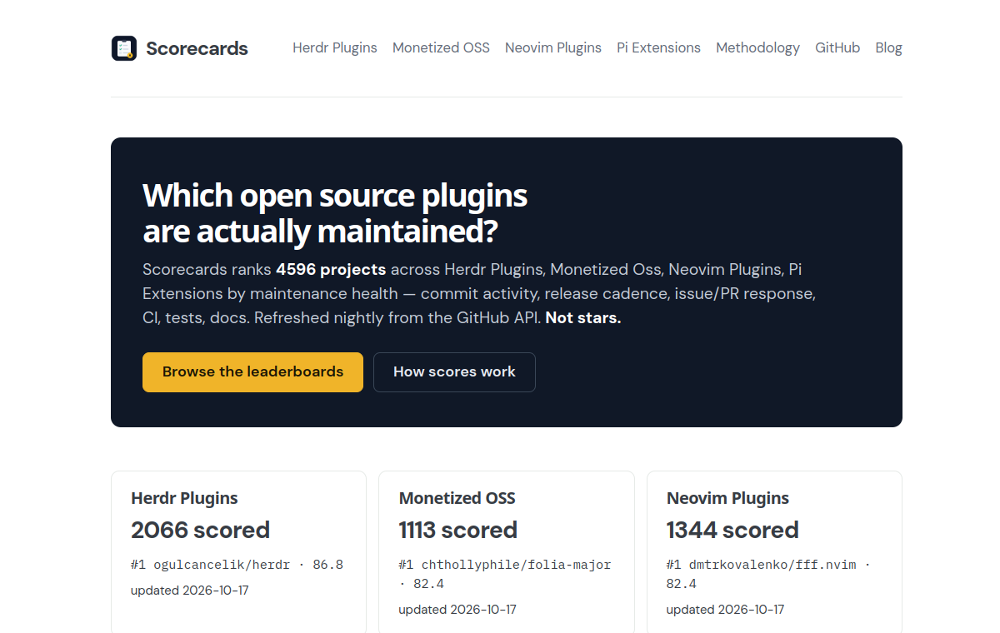
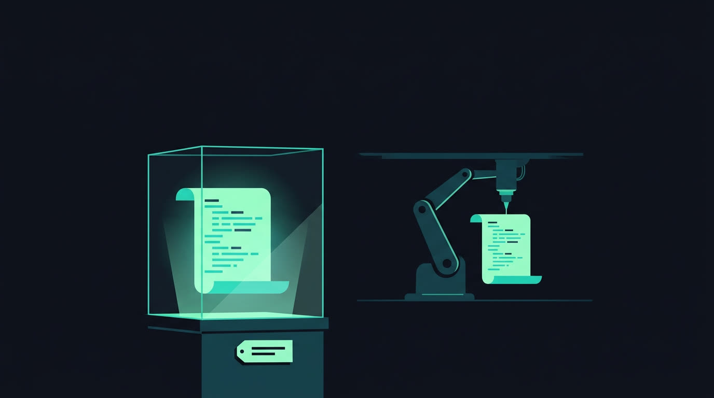
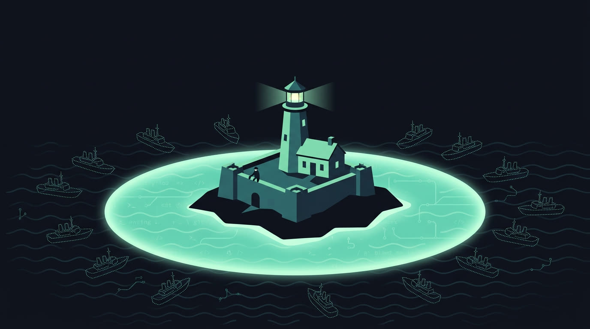
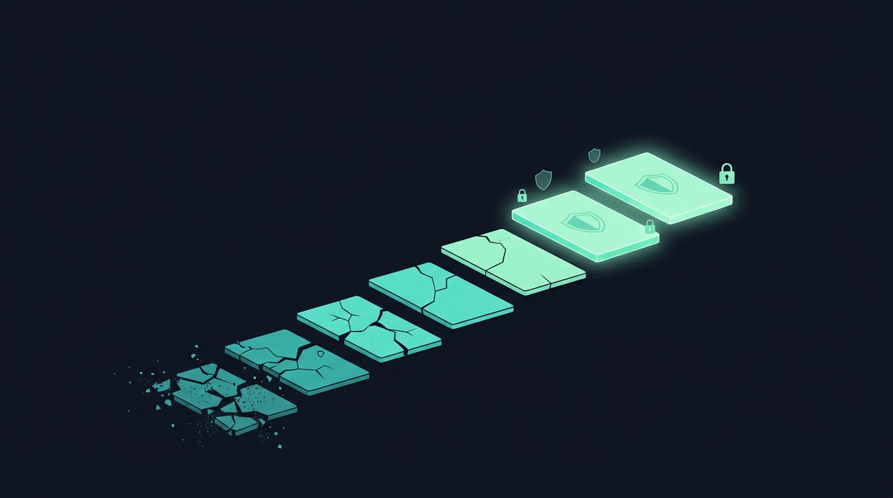

Maintainer interviews
I interview open source developers about how AI is changing the way they monetize — what's working, what stopped working, and what they're trying next.
Interviews start soon — read the essays →“Everyone wants the code. Nobody wants the on-call. Charge for the on-call.”
Scorecards
Which open source projects are actually maintained? Scorecards ranks thousands of projects by maintenance health — commit activity, release cadence, issue and PR response, CI, tests, docs. Refreshed nightly from the GitHub API. Not stars.
Browse the scorecards →
Blog
Essays on how to make money from open source in the age of AI — why nobody will pay for code anymore, eight ways to make money from open source, and why maintenance is the last moat.
Read the blog →


One email a month. No hype.
New essays and maintainer interviews, straight to your inbox.
Subscribe on Substack →